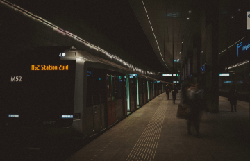

Metro
Many people travelling to or from Amsterdam will often make use of the train, which not only provides a superb connection with Amsterdam Airport Schiphol, but also different parts of the city, other Dutch towns and cities, plus direct connections with Belgium, France and Germany.
